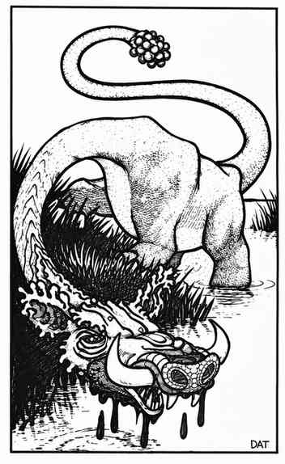

卡托布莱帕斯 · Catoblepas
 |
|
这种噩梦般的生物丑恶得难以形容，毫无可取之处。它的身体像一头臃肿巨大的水牛，散发着令人作呕的气味。它的脖子细长，顶着一颗比疣猪还丑陋的大头；四肢粗短，像河马一样。尾巴强壮如蛇，能以惊人的速度抽打敌人。
被尾巴击中的生物有 75% 的基础概率被击晕 1–10 个近战轮。角色每高于 1 级（怪物则每高于 1 个生命骰），此概率便降低 5%。例如，11 级角色被击中时，只有 25% 的概率被击晕。它可能因栖息于恶臭沼泽与瘴气泥潭，才形成这种古怪的遗传特征；也可能是某个疯狂神祇肆意改造生命的结果。无论成因如何，它最可怖的特征都是那双充血的眼睛。
卡托布莱帕斯的凝视等同于死亡射线，射程为 6 寸，甚至能穿透至星界与以太位面。任何与其目光相遇的生物都会立即死亡，无法豁免。若遭遇时完全突袭（掷 6 面骰结果为 2），队伍中就有一人已经与它对视。否则，它虚弱的脖子只有 25% 的概率能抬起头，达到使用凝视的高度。若双方都保持静止，这一概率每个近战轮增加 15%；若它必须追随快速移动，或正缓慢追踪猎物，则每轮只有 10% 的概率能抬起头并锁定目标。
逃跑的受害者即使避开目光，也仍会受到卡托布莱帕斯致命凝视的影响，但此时可以进行豁免检定。